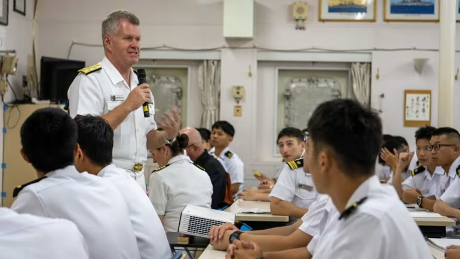
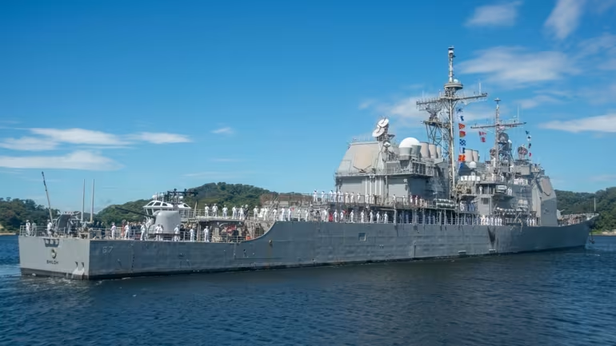

WASHINGTON -- The U.S. has pushed back plans to hold crucial defense meetings with Japan that were set to follow April's bilateral summit where the two countries' leaders forged closer security ties, Nikkei Asia has learned, amid continuing tensions in the Middle East. Japanese Prime Minister Fumio Kishida and U.S. President Joe Biden announced a slew of agreements on defense cooperation in Washington on April 10. Among the discussions, the two leaders tasked their respective defense and foreign ministries to lay out specific plans to deepen the defense relationship through the Security Consultative Committee, also known as the 2+2 meeting. But the two countries are struggling to set a date for when U.S. Secretary of State Antony Blinken, Defense Secretary Lloyd Austin, Japanese Foreign Minister Yoko Kamikawa and Defense Minister Minoru Kihara can come together. The steepest hurdle is to find time in Blinken's busy schedule as the Israel-Iran confrontation mounts and the Gaza humanitarian crisis persists. This week, he is in Beijing to thaw U.S.-China friction and press China to stop its firms from supporting Russia's war machine. Initially, there were talks of holding a 2+2 in May. Then, there were talks about convening the 2+2 on the sidelines of the Shangri-La Dialogue -- a defense symposium held by the International Institute for Strategic Studies -- in Singapore held between May 31 and June 2. But neither plans crystalized because Blinken "has so many fires to extinguish," a U.S. official said. Sources said that it could take until July or August for the meeting to take place. Blinken is planning a summer visit to Japan, which could be a venue, if Austin's schedule permits. "To hold a 2+2, we would need to prepare a joint statement. That requires extensive preparations and we are nowhere near that stage," a Japanese official who spoke on the condition of anonymity told Nikkei Asia. Currently, both Austin and Kihara are scheduled to attend a change of command ceremony for the U.S. Indo-Pacific Command in Hawaii on May 3. The two are likely to meet on the sidelines to advance some of the agreements by the two leaders.

One of those is to upgrade the respective command and control frameworks of the U.S. forces in Japan and the Japanese Self-Defense Forces to integrate operations and enable joint planning. The Japanese side is in the process of creating a joint operations command to direct all SDF operations, including ground, air and maritime operations, by March 2025. The U.S. side will discuss ways to establish a matching structure that places the Navy, Marine Corps, Air Force, and Army under one command. The U.S. Congress has tasked the Pentagon to submit by June 1 a feasibility study on how to modify U.S. command structures in Japan "The clock is ticking on this," Jim Schoff, senior director at Sasakawa Peace Foundation USA, said. But Schoff predicted the June date could be missed because the Indo-Pacific Commander in Hawaii, to whom the new commander in Japan will report, will swap next month. Discussions can only proceed once Adm. Samuel Paparo, the new Indo-Pacific Commander, settles into his job, Schoff said.
Christopher Johnstone, Japan chair at the Washington think tank Center for Strategic and International Studies, said, "A short delay in the timing of the 2+2 would not be harmful, because it would give the Department of Defense additional time -- with a new Indo-Pacific commander in place in May -- to develop a detailed concept for the future of alliance Command and Control." Aspects to be determined include "the missions it would be responsible for, its area of responsibility, and its relationship with Japan's new Joint Operations Command," he said. But the Pentagon "needs to move quickly or momentum will flag," he said. Yuki Tatsumi, director of the Japan program at the Stimson Center, said that the joint statements that emerge after a 2+2 meeting is typically “a result of complicated bottom-up consultation process that is shouldered by the bureacracy on both sides.” Tatsumi, who previously worked as a special assistant for political affairs at the Embassy of Japan in Washington, pointed to the revision of the U.S.-Japan Guidelines for Defense Cooperation in the mid-90s as an example. That took more than a year after leaders of both countries ordered the change in 1996. What Biden and Kishida have ordered is “a task of similar magnitude for the bureaucracies of the U.S. and Japan,” she added.